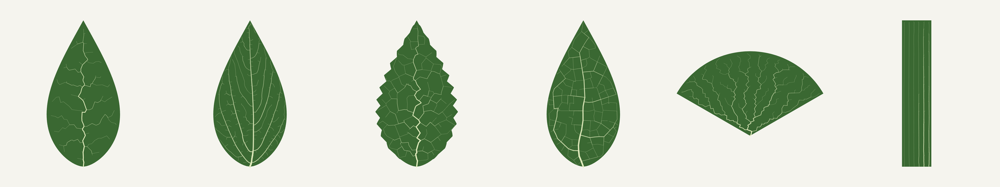
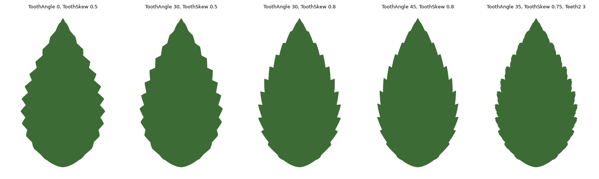
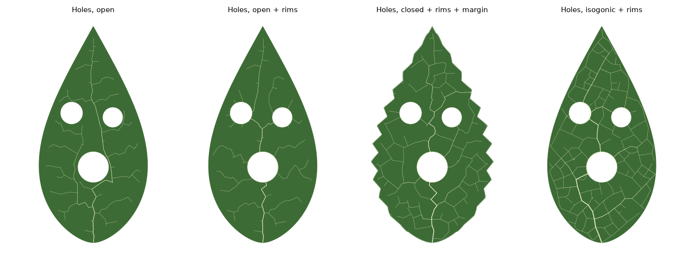
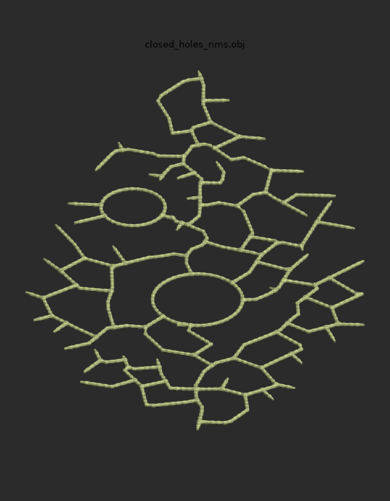

Grasshopper plugin for Rhino 8
Grasshopper plugin for Rhino 8Overview
Leaf Venation grows veins the way real leaves do: vein tips grow toward hormone sources scattered in the blade, following Runions et al., SIGGRAPH 2005. Everything is on the Leaf tab, Venation panel.
| Component | What it does | Main output |
|---|---|---|
| Leaf Outline | Draws a parametric leaf shape, with optional teeth | Outline curve, Base point |
| Leaf Venation | Grows the veins inside an outline or on a surface | Venation, Segments, Veins |
| Vein Mesh | Turns the veins into one joined, tapered mesh | Mesh |
| Leaf Texture | Writes colour, bump, normal and cut-out images | PNG files and a mapped leaf mesh |
The usual chain is Leaf Outline → Leaf Venation → Vein Mesh (or → Leaf Texture). Leaf Venation also works on its own.

Example files
Each step from 2 to 9 has a ready-made Grasshopper file, already wired, with sliders on the values worth trying and a note panel. A small script builds them on your PC, so they always match your installed plugin.
- Install the plugin (step 1) and restart Rhino.
- Download
make_examples.py. - In Rhino, type
ScriptEditor, open the file and press Run. Or type-RunPythonScriptand pick it. - Open the files from the new Leaf Venation Examples folder on your Desktop.
The script prints which files it saved. If one fails, it names the step and the reason.
Install
The plugin needs Rhino 8 for Windows. It does not load in Rhino 7.
From the Package Manager: run _PackageManager in Rhino, search for leafvenation, click Install, then restart Rhino.
By hand:
- Close Rhino.
- Copy
LeafVenation.ghato%APPDATA%\Grasshopper\Libraries\. In Grasshopper this is File › Special Folders › Components Folder. - Right-click the file, choose Properties, and tick Unblock if Windows shows it.
- Start Rhino and run
Grasshopper. You should see a Leaf tab with four components.
Your first leaf from a preset
Drop Leaf Venation on the canvas with nothing connected. It already grows preset 1, an ovate leaf with open veins.
- Right-click the Preset input and pick a preset by name, or connect an integer slider from 1 to 6.
- Turn off the component's own preview, then connect Segments to a Curve parameter to see the veins as lines.
- Read Info in a Panel. It shows the node and loop counts, the solve time and every value actually used.
| Preset | What you get |
|---|---|
| 1 Open, marginal growth | Tree-like veins in a leaf that grows from its edge |
| 2 Open, dense, static | Many fine open veins in a full-size leaf |
| 3 Closed, toothed | Looping veins in a leaf with teeth |
| 4 Closed, isogonic | Loops, with the leaf growing evenly everywhere |
| 5 Ginkgo fan | Fan-shaped veins spreading from one point |
| 6 Grass, parallel | Parallel veins from several seeds along the base |
The preset fills in every input you leave unconnected. Anything you connect overrides just that value, so you can start from a preset and change one thing at a time.
Example file: Step 2 - Presets.gh
Your own leaf shape
Connect Leaf Outline → Outline to Leaf Venation → Boundary, and Base to Seeds. Preset distances scale to the outline's size, so the pattern looks the same on a 10-unit or a 1000-unit leaf.
| Input | Default | What it changes |
|---|---|---|
| Length, Width | 100, 55 | Blade size. The leaf sits in the XY plane, base at the origin, tip toward +Y. |
| Shape | 0.4 | Where the widest point sits, from 0.2 (near the base) to 0.8 (near the tip) |
| Tip | 1.2 | 0.5 is rounded, 2 is long and pointed |
| Teeth, ToothAmp | 0, 2.5 | Number of teeth per side and their depth. 0 is a smooth edge. |
| Teeth2, Tooth2Amp | 0, 0.8 | Smaller teeth on each tooth (doubly toothed edge) |
| ToothAngle | 0 | Degrees the teeth lean toward the tip. 20 to 45 looks natural. |
| ToothSkew | 0.5 | 0.5 is symmetric. 0.7 to 0.85 gives a long lower edge and a steep upper edge, like a saw. |

A good natural toothed leaf to start from: Teeth 12, ToothAmp 3.5, ToothAngle 30, ToothSkew 0.75.
Any curve works too. Draw a closed planar curve in Rhino, reference it in a Curve parameter, and connect it to Boundary. It can lie in any plane. If you leave Seeds empty, the veins start at the outline point nearest the bottom centre.
Example file: Step 3 - Leaf Outline.gh
Choose where the veins start
The veins grow out from the Seeds points. Base is the centre the leaf grows from in the marginal and uniform growth modes; leave it empty and it uses the first seed.
- One seed at the petiole gives a normal leaf. Put it on the edge of the outline.
- A seed inside the blade makes veins radiate from that point.
- Several seeds along the base with Growth 3 give parallel, grass-like veins.
- Seeds off the plane or surface are pulled onto it.
Moving the seed with an MD Slider keeps it on the leaf:
- Turn the outline into a surface with Boundary Surfaces (skip this if you already use a Surface).
- Connect it to S of Evaluate Surface and right-click S › Reparameterize, so 0 to 1 covers the leaf.
- Add an MD Slider and connect it to the uv input.
- Connect Evaluate Surface → P to Seeds.
Drag the slider and the veins regrow from the new point. Evaluate Surface works on the untrimmed square, so near the corners the point can land outside the leaf; then few or no veins grow and the component warns "No veins grew". To pin the seed exactly to the edge, use Curve Closest Point on the outline with the slider's point and feed its P to Seeds.
Example file: Step 4 - Move the seed.gh
Holes and rim veins
Connect closed curves that sit inside the outline, on the same plane, to Holes. Veins grow around holes and never cross them.
- RimHoles = True: a hole's edge becomes a vein as soon as a vein reaches it, and new veins sprout from it.
- RimMargin = True: the leaf edge becomes a vein once the leaf is full size.
- Rim veins stay connected to the rest of the network, so Vein Mesh still gives one piece.

The Outline output returns the grown outline first, then each hole, which is handy for building the blade with Boundary Surfaces.
Example file: Step 5 - Holes.gh
Grow on a curved surface
Connect a surface or a single-face Brep to Surface. It can be flat or curved, trimmed or not.
- The surface's outer edge is the leaf outline and its inner trims are holes.
- A Boundary curve lying on the surface replaces the outer edge. Holes curves on the surface add more holes.
- If the Brep has several faces, only the first is used and the component warns you.
On a curved surface the veins grow in the surface's own UV space, stretched so one unit is about one model unit, and are then mapped onto it. This works well on gently bent or domed surfaces. A surface whose UV lines are very uneven stretches the pattern the same way.
Tip: project a flat leaf outline onto the curved surface with Project and connect the result to Boundary.
Example file: Step 6 - Curved surface.gh
The settings worth changing first
Start from the preset closest to what you want and override one value at a time.
| Input | What it does | Try |
|---|---|---|
| Closed | False grows an open tree; True makes veins join into loops | Switch it on any preset |
| KillDist | How close a vein must get before a source dies. Lower gives denser veins and more loops. | Halve or double the preset value |
| D | Length of each vein step. Smaller gives smoother, finer veins and a slower solve. | Half to 1.5 times the preset value |
| Darts | Sources added per step. More gives a more regular, even pattern. | 40 to 500 |
| Growth | 0 static, 1 grows from the edge, 2 grows evenly, 3 grows in length only (grass) | Right-click to pick by name |
| Iterations | Number of steps. Too few leaves the leaf unfinished. | Raise it if the veins stop short |
| Seed | The random seed. Same settings, a different variation. | Any integer |
The rest (BirthS, BirthV, StartScale, GrowSteps, MurrayN, MinRadius) are for fine tuning. Slower growth (larger GrowSteps) gives more fan-like veins.
Example file: Step 7 - Key settings.gh
Turn the veins into a mesh
Connect Leaf Venation → Venation to Vein Mesh → Venation. With the defaults you get one connected, closed mesh around the whole network. It thins from the main veins out to the tips and has smooth fillets where veins meet, like Rhino's MultiPipe.

| Input | Default | Use it to |
|---|---|---|
| Joined | True | False builds fast separate tubes per branch instead of one skin |
| MaxRadius | empty | Set the main vein's radius yourself. Empty uses Murray's-law radii. |
| MinRadius | empty | Set the tip radius, when MaxRadius is set |
| Taper | 1 | Above 1, only the main veins stay thick |
| Scale | 1 | Make every vein thicker or thinner |
| CellSize | 0 (auto) | Smaller gives a finer skin and a slower solve |
| Half | False | Keep only the top half, for raised veins on a flat blade |
For a 3D leaf: Boundary Surfaces on the outline, Extrude it a little for the blade, and add Vein Mesh with Half = True on top.
Example file: Step 8 - Vein Mesh.gh
Textures for rendering
Connect Venation to Leaf Texture. Save your .gh file first: with Folder empty, the images go into a leaf-textures folder next to it.
| File | Use in a material as |
|---|---|
leaf_color.png | Base colour |
leaf_height.png | Bump (thicker veins are higher) |
leaf_normal.png | Normal map (OpenGL, +Y) |
leaf_alpha.png | Opacity or cut-out. Holes are black. |
- Bake the Leaf mesh into Rhino. Its texture coordinates already match the images.
- Create a Physically Based material and load the colour, normal and alpha images into its matching slots.
- Assign it to the baked mesh. No texture mapping setup is needed.
Set Write to False while you adjust the venation, so files are not rewritten on every change.
Example file: Step 9 - Leaf Texture.gh
Troubleshooting
| Problem | Fix |
|---|---|
| No Leaf tab | Check the .gha is unblocked and you are in Rhino 8, not Rhino 7 |
| "No veins grew" | Move the seed onto the outline edge or inside the leaf, and out of any hole |
| Veins stop short of the edge | Raise Iterations |
| Solve is slow | Raise D or KillDist, lower Darts, or raise CellSize in Vein Mesh |
| Vein Mesh is in pieces or has odd edges | Lower CellSize |
| Pattern looks stretched on a surface | Rebuild the surface so its UV lines are even, or use a flat outline and deform it afterwards |
| Textures not written | Save the .gh file, or set a Folder, and check Write is True |